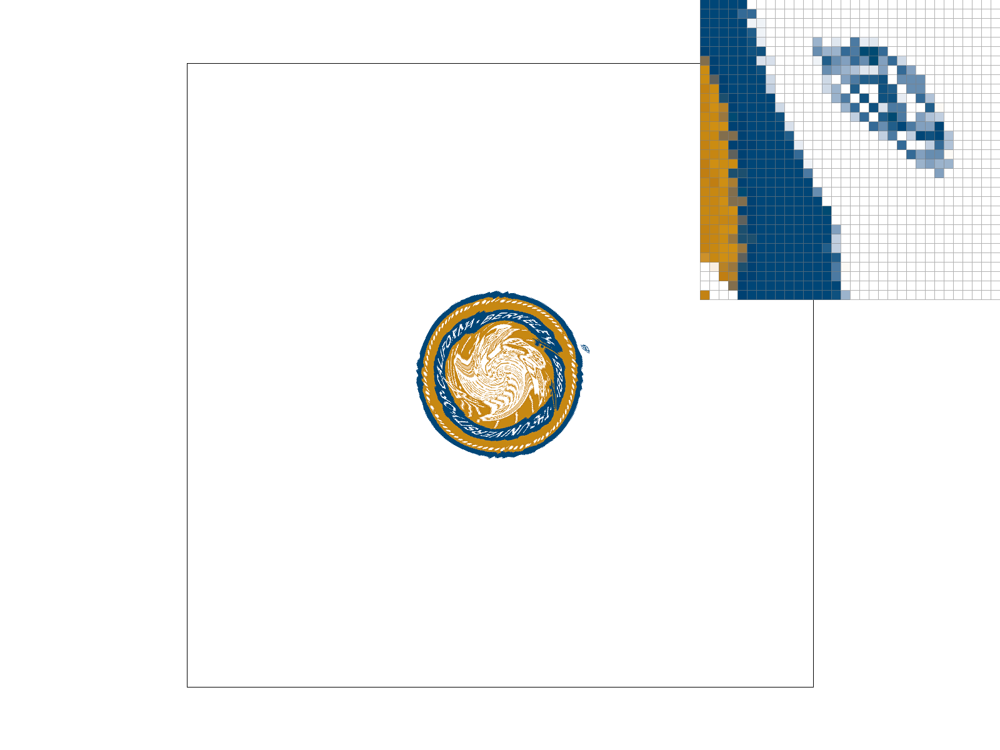

CS184/284A Spring 2025 Homework 1 Write-Up
Link to webpage: (TODO) cs184.eecs.berkeley.edu/sp25
Link to GitHub repository: https://github.com/cal-cs184-student/sp25-hw1-_-2
Overview
Give a high-level overview of what you implemented in this homework. Think about what you've built as a whole. Share your thoughts on what interesting things you've learned from completing the homework.Task 1: Drawing Single-Color Triangles
Walk through how you rasterize triangles in your own words.
We rasterize triangles by sampling center pixel points and determining whether they are in the triangle or
not. If a given point is in a triangle, then the specified pixel will be filled in with the respective
color. We can check if a given point is within a triangle by performing a Point-in-Triangle test.
Given three points of a triangle, we can construct three different vectors.
First, we calculate a rotation value determined by the cross product of v0 (assuming the
triangle is
translated such that v0 = 0). This is done by taking the cross product of
(v1 - v0) and (v2 - v0). If the
triangle is translated such that v0 = 0 and the cross product of v1 and
v2 equals 0, then v2 lies on v1 and
the points are colinear. This means we can find the point in the middle of this collinear set by doing some
comparisons. If we meet these criteria, we can call rasterize_line() instead and exit early
from this function.
If we are still in the function, that means we have an actual triangle we have to scan through.
The basic premise of this step is to capture every point in the triangle, so we check each sample
within the bounding box of the triangle, round down the minimum x and y coordinates, and round up
the maximum x and y coordinates to ensure edge cases are captured during supersampling. Furthermore,
we added a line-skip algorithm which will be explained in a couple sections.
Then, for each pixel in this boundary, we can move on to performing the Point-in-Triangle test:
- Select a vector.
- Move the next vector and the point vector so that their tails are at the origin.
- Perform a cross product.
- This will give a positive value if the point vector is clockwise from the edge vector.
- To handle counterclockwise order of the edge vectors, multiply this cross product by a rotation "sign" value calculated previously (positive if clockwise, negative if counterclockwise).
- If each product is positive, then the cross product is aligned with the rotation value and the point is "inside".
Explain how your algorithm is no worse than one that checks each sample within the bounding box of the triangle.
The line-skip algorithm optimizes the number of pixel checks out, cutting chunks off of the bounding box. As checking through the bounding box is our worst case scenario, this algorithm is no worse than it.
Show a png screenshot of basic/test4.svg with the default viewing parameters and with the pixel inspector centered on an interesting part of the scene.

Extra credit: Explain any special optimizations you did beyond simple bounding box triangle rasterization, with a timing comparison table (we suggest using the c++ clock() function around the svg.draw() command in DrawRend::redraw() to compare millisecond timings with your various optimizations off and on).
Line Skip Algorithm:Under "clean", deterministic scans (excluding the randomized sampling) of the triangle, under any point in the bounding box, there will be at most two line check failures (and minimum of zero -- inside the triangle). Furthermore, the left side of the triangle will fail a different line check than the right side, as there has to be at least one line that spans from the top of the bounding box to the bottom. This means that, as the triangle is being scanned, there will be a line check that did not fail at the left side of the triangle but does fail on the right side -- and it will start to fail when we have passed the triangle horizontally. At this time, then, we can skip the scan to the next line as we have determined we have passed the triangle in the bounding box.
Optimizing out floating-point multiplications: The line test generally consists of a cross product of the triangle edge vector and the point vector, and using that value to see whether this point is on the "left" or "right" of the vector. In our case, this was done by multiplying the cross product value with another cross product we had previously calculated representing the winding order of the vectors. This saves us a bunch of if statements and makes our code look cleaner.
However, both of these cross-product values are doubles, and the floating-point multiplication
from it is very
expensive. As these calculations are done three times per point, optimizing this calculation seemed
valuable.
An aspect we noticed in these calculations is that we don't really care about the exact value of the cross
products -- we only need to know whether they're positive, negative, or zero. So, with inspiration from
Quake 3's Inverse Square Root algorithm (thankfully not the "magic number" line) we bit-cast the
double values
into int_64t values instead. This absolutely corrupts the original value of the calculation,
but preserves
positive-negative-or-zero aspect of the number, which is greatly appreciated! This optimization cuts the
rendering time by approximately 10%.
Task 2: Antialiasing by Supersampling
Walk through your supersampling algorithm and data structures. Why is supersampling useful? What modifications did you make to the rasterization pipeline in the process? Explain how you used supersampling to antialias your triangles.
Our supersampling algorithm utilizes the internal color sample_buffer data structure, which
stores all
supersamples in a 1D vector. The number of elements in this buffer is
width * height * sample_rate.
A specific supersample color [s] from position [x, y] can be accessed by indexing
sample_buffer with [(y * width * sample_rate) + (x * sample_rate) + s].
We made the following modifications to rasterize_triangle():
- Created a vector of sample point offsets for supersampling.
- Given
sample_grid_n = sample_rate / 2:- The x offset is calculated as:
x_offset = (((1.0) + (2.0 * dx)) / (2.0 * sample_grid_n)) - The y offset is calculated as:
y_offset = (((1.0) + (2.0 * dy)) / (2.0 * sample_grid_n))
- The x offset is calculated as:
- Iterated over bounding box x and y coordinates.
- Iterated over all sample points
sfor supersampling.- Constructed a vector from the x and y offsets.
- Continued with the triangle rasterization algorithm as usual.
- Instead of
fill_pixel(), we directly modified thesample_bufferfor the given sample points.
resolve_to_framebuffer() to do the following:
- Iterate over all x
- Iterate over all y
- Iterate over all supersamples to get the average color for a given pixel
- Continue as normal, setting the
rgb_framebuffer_targetto the average color for a given pixel
Supersampling is useful because it is a straightforward way for us to perform antialiasing by increasing
the resolution at which we sample, then downsampling from this resolution by averaging. This new resolution
at which we supersample at is determined by sample_rate, so if we have a
sample_rate of 4 then we are essentially sampling our triangle at 4x higher resolution.
Antialiasing is important because this allows us to reduce the amount of jaggies and strange artifacts that might be generated when rasterizing a triangle.
Show png screenshots of basic/test4.svg with the default viewing parameters and sample rates 1, 4, and 16 to compare them side-by-side. Position the pixel inspector over an area that showcases the effect dramatically; for example, a very skinny triangle corner. Explain why these results are observed.
|
|
|
|
We can observe that there is a gap between the pixels that are rasterized for the very skinny triangle corner when we use a sample rate of 1. However, as we increase the sample rate to 4 and furthermore to 16, we can see that this gap disappears and that we also see pixels that are not exactly red, but a blend of red and white. This is because our supersampling method takes the average color of all supersamples in a given pixel. We observe that by increasing the sample rate, we are increasing the frequeny at which we sample at, therefore capturing more of the high frequency signals in the triangle which would have otherwise been missed with a lower sample rate. Additionally, we also observe that increasing the sample rate further increases the blurring effect along the edges of the triangle as expected.
Extra credit: If you implemented alternative antialiasing methods, describe them and include comparison pictures demonstrating the difference between your method and grid-based supersampling.
We decided to implement randomized supersampling into our design. Originally we just randomized the sample
point coordinates for each triangle rasterization, but this causes a big issue: at points on the edge of a
triangle, even in a mesh, the randomizations can cause the point to not be colored at all with unfavorable
enough odds.
To solve this issue, we store the randomization points used for each pixel and reuse them when that pixel
is being checked again. This makes sure that all pixels between triangles are colored, one way or another,
and also optimizes rand() calls.
However, there are some other faults to this as well, and these are less trivial to fix: Rendering time
suffers from the randomization calls when the randomized supersampling is activated. However, after it is
activated the rendering time improves a bit. Worse, though, is that the Line Skip optimization has to be
disabled when running this type of supersampling, as the line checks can now fail mid-row due to the
randomized sample point locations.
Task 3: Transforms
Create an updated version of svg/transforms/robot.svg with cubeman doing something more interesting, like waving or running. Feel free to change his colors or proportions to suit your creativity. Save your svg file as my_robot.svg in your docs/ directory and show a png screenshot of your rendered drawing in your write-up. Explain what you were trying to do with cubeman in words.
We used rotate() and translate() transforms in order to adjust cubeman's parts to
make it seem like they are running. Since the order of transforms matter, we first rotated cubeman's parts
to either be 45 degrees or 90 degrees before translating the individual parts. Additionally, the various
polygon fills have been edited to use Berkeley Blue, California Gold, and Gold Dark colors, which represent
the spirit of our school!
Task 4: Barycentric coordinates
Explain barycentric coordinates in your own words and use an image to aid you in your explanation. One idea is to use a svg file that plots a single triangle with one red, one green, and one blue vertex, which should produce a smoothly blended color triangle.
Barycentric coordinates describe a location within a triangle as a linear combination of distances to the three vertices. Given a triangle with red, green, and blue vertices, we can represent any interior point using weights \(\alpha\) (red), \(\beta\) (green), and \(\gamma\) (blue) such that:
In this example, vertex coordinates correspond to the following colors:
- Red: \(\alpha = 1.0,\ \beta = 0.0,\ \gamma = 0.0\)
- Green: \(\alpha = 0.0,\ \beta = 1.0,\ \gamma = 0.0\)
- Blue: \(\alpha = 0.0,\ \beta = 0.0,\ \gamma = 1.0\)
Thus, we can represent the color purple as: \(\alpha = 0.45,\ \beta = 0.1,\ \gamma = 0.45\)
This coordinate system enables smooth linear interpolation of values across triangles, making it essential for computer graphics applications like color blending and texture mapping.
Show a png screenshot of svg/basic/test7.svg with default viewing parameters and sample rate 1. If you make any additional images with color gradients, include them.

Task 5: "Pixel sampling" for texture mapping
Explain pixel sampling in your own words and describe how you implemented it to perform texture mapping. Briefly discuss the two different pixel sampling methods, nearest and bilinear.
Pixel sampling allows us to perform texture mapping on a triangle, which is taking a texture and mapping each
point to the specified triangle. However, we come across the challenge of the texture resolution not
matching the screen pixel area one-to-one. To combat this, we can first determine how to map our triangle's
points from screen space to texture space. We can first use barycentric coordinates, as described in the
section above, in order to go from (x, y) coordinates to (u, v) coordinates, given
the (x, y) coordinates
and (u, v) coordinates of the three vertices of the triangle. Next, we can perform pixel
sampling with
either of the two methods outlined below.
This method takes the (u, v) coordinate and maps it to the nearest texel given the dimensions of
the
texture. This is done by simply rounding to the nearest integer. This method is straightforward and doesn't
require as much compute.
This method takes the (u, v) coordinate and finds the four nearest neighboring texels. Then, we
linearly
interpolate (lerp) across the top left and top right point horizontally. Repeat this horizontal linear
interpolation for the bottom left and bottom right point. Then, we can finally perform a linear
interpolation vertically to find the get a linear combination of the four neighboring texels, weighted on
the distance of the point. This method is called bilinear interpolation because we perform linear
interpolation in the horizontal direction and vertical direction. This method requires much more compute
compared to nearest neighbor pixel sampling.
Check out the svg files in the svg/texmap/ directory. Use the pixel inspector to find a good example of where bilinear sampling clearly defeats nearest sampling. Show and compare four png screenshots using nearest sampling at 1 sample per pixel, nearest sampling at 16 samples per pixel, bilinear sampling at 1 sample per pixel, and bilinear sampling at 16 samples per pixel.
|

|
|
|
|
|
Comment on the relative differences. Discuss when there will be a large difference between the two methods and why.
The svg used is the seal of the University of California, Berkeley. On this seal, there is a registered trademark symbol on the right side. This registered trademark symbol is very difficult to recognize when we use nearest neighbor pixel sampling with a sample rate of 1, but we can more easily recognize it when we use bilinear pixel sampling with a sample rate of 1. Additionally, we notice that there is not a large difference between the two methods when we increase the sample rate, as supersampling reduces the aliasing effects. In general, we will notice a large difference between the two methods when there's a lot of diagonals and curves, as we can see these become more blurred out in bilinear pixel sampling.
Task 6: "Level Sampling" with mipmaps for texture mapping
Explain level sampling in your own words and describe how you implemented it for texture mapping.
Level sampling is used to determine which mipmap level to use for texture mapping. As the mipmap level increases, the resolution of the texture map decreases and this leads to less aliasing artifacts when we sample from it. We implement three methods of level sampling:
Level zero:This is the original resolution of the mipmap and texture, so we can call the respective texture mapping functions.
Nearest level:We need to calculate the barycentric coordinates of (x+1, y) and (x, y+1). Once we
calculate these coordinates, we can calculate the difference vectors to obtain (du/dx, dv/dx)
and (du/dy, dv/dy). Next, we can calculate the required factor to downsample, L,
by using the
following formula:
\[ L = max(\sqrt{(\frac{du}{dx})^2 + (\frac{dv}{dx})^2}, \sqrt{(\frac{du}{dy})^2 + (\frac{dv}{dy})^2}) \]
Finally, we can calculate the required level,D, we need to sample at by the following formula:
\[ D = log_2(L) \]
Once we figure out the required level, we can use round() to figure out what the nearest mipmap
level would
be, and continue with texture mapping accordingly.
We can calculate the required level D as per above, then we can use this to determine how much
to linearly interpolate the texture sampling values from the mipmap one level above (using
ceil()) and one level below (using floor()).
You can now adjust your sampling technique by selecting pixel sampling, level sampling, or the number of samples per pixel. Describe the tradeoffs between speed, memory usage, and antialiasing power between the three various techniques.
Pixel samplingSpeed: Slower, since cache misses are increasing due to having to traverse through a larger texel space to compute the bilinear interpolation to calculate the texture for a pixel.
Memory usage: Doesn't need to store mipmap levels, but still needs to store some intermediate values for linear interpolations.
Antialiasing power: This method is great for jaggies and diagonals since it blurs the various edges, it struggles to deal with other forms of aliasing because this uses mipmap level 0.
Level samplingSpeed: Decent speed since we are trading off memory for speed, but requires additional linear interpolations if we are doing something like trilinear sampling.
Memory usage: Storing all the mipmap levels requires \( \frac{4}{3} \) space compared to the original texture map size. However, this memory cost only depends on the original resolution of the texture.
Antialiasing power: This method elimiates moiré patterns by selecting the correct level of detail to use, but the problem of jaggies and diagonals aren't dealt with.
Number of samples per pixelSpeed: Very slow, since this method rasterizes the scene sample_rate times to achieve
supersampling.
Memory usage: The sample_buffer scales linearly with sample_rate, as the size of
the sample
buffer is `width * height * sample_rate`, so this is expensive in terms of memory cost.
Antialiasing power: By increasing the number of samples per pixel, we are able to capture higher frequencies
and this achieves antialiasing. This method of antialiasing is arguably the best to elimiate all types of
aliasing as we increase sample_rate.
Using a png file you find yourself, show us four versions of the image, using the combinations of L_ZERO and P_NEAREST, L_ZERO and P_LINEAR, L_NEAREST and P_NEAREST, as well as L_NEAREST and P_LINEAR.
To use your own png, make a copy of one of the existing svg files in svg/texmap/ (or create your own modelled after one of the provided svg files). Then, near the top of the file, change the texture filename to point to your own png. From there, you can run ./draw and pass in that svg file to render it and then save a screenshot of your results.
Note: Choose a png that showcases the different sampling effects well. You may also want to zoom in/out, use the pixel inspector, etc. to demonstrate the differences.
|
|
|
|
|
|
Extra credit: If you implemented any extra filtering methods, describe them and show comparisons between your results with the other above methods.
N/A
(Optional) Task 7: Extra Credit - Draw Something Creative!
Save your best svg file as competition.svg in your docs/ directory, and show us a 800x800 png screenshot of it in your write-up!
N/A
Explain how you did it. If you wrote a script to generate procedural svg files, include it in your submission in the src/ directory and briefly explain how it works.
N/A